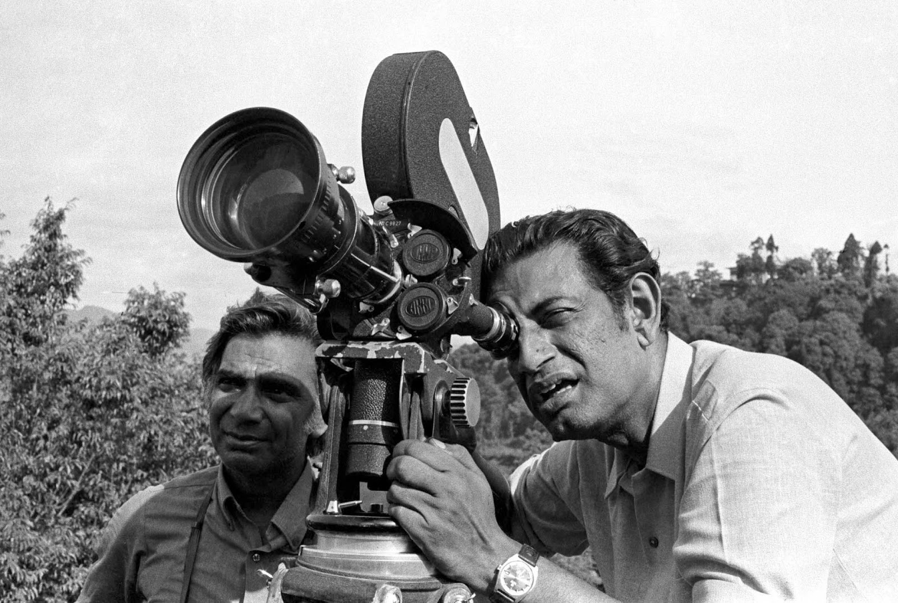
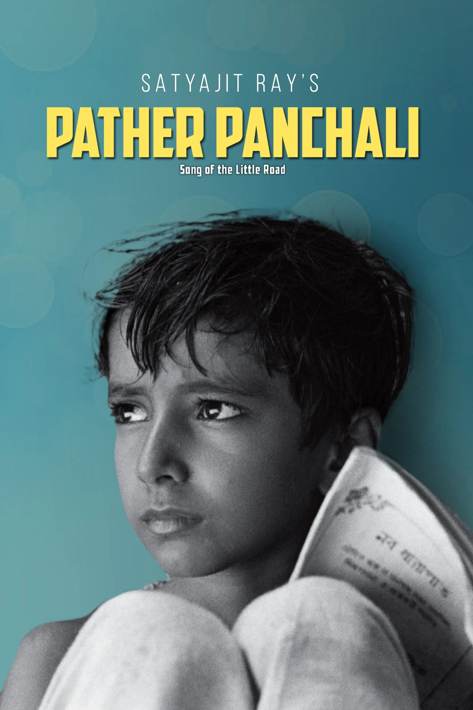
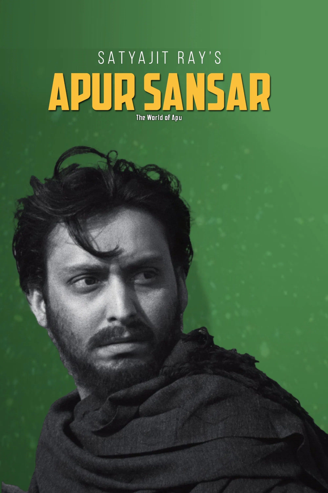

Tribute to Satyajit Ray
The legendary filmmaker, writer, and cultural icon of India
About Satyajit Ray
Satyajit Ray (1921-1992) was an Indian filmmaker, screenwriter, author, and composer. Widely considered one of the greatest filmmakers of the 20th century, he brought Indian cinema to the world stage with his unique storytelling, realism, and deep humanism.
Achievements
- Directed the world-famous Apu Trilogy: Pather Panchali, Aparajito, and Apur Sansar.
- Recipient of an Academy Honorary Award (Oscar) in 1992.
- Won 32 National Film Awards in India.
- Honored with Bharat Ratna, India's highest civilian award, in 1992.
- International recognition from Cannes, Berlin, and Venice Film Festivals.
Famous Works

Pather Panchali (1955)
.jpg)
Aparajito (1956)

Apur Sansar (1959)
Inspirational Quote
"The director is the only person who knows what the film is about."
Legacy
Satyajit Ray continues to inspire filmmakers and storytellers across the world. His works are studied in film schools, and his influence can be seen in the works of directors such as Martin Scorsese, Akira Kurosawa, and Wes Anderson.